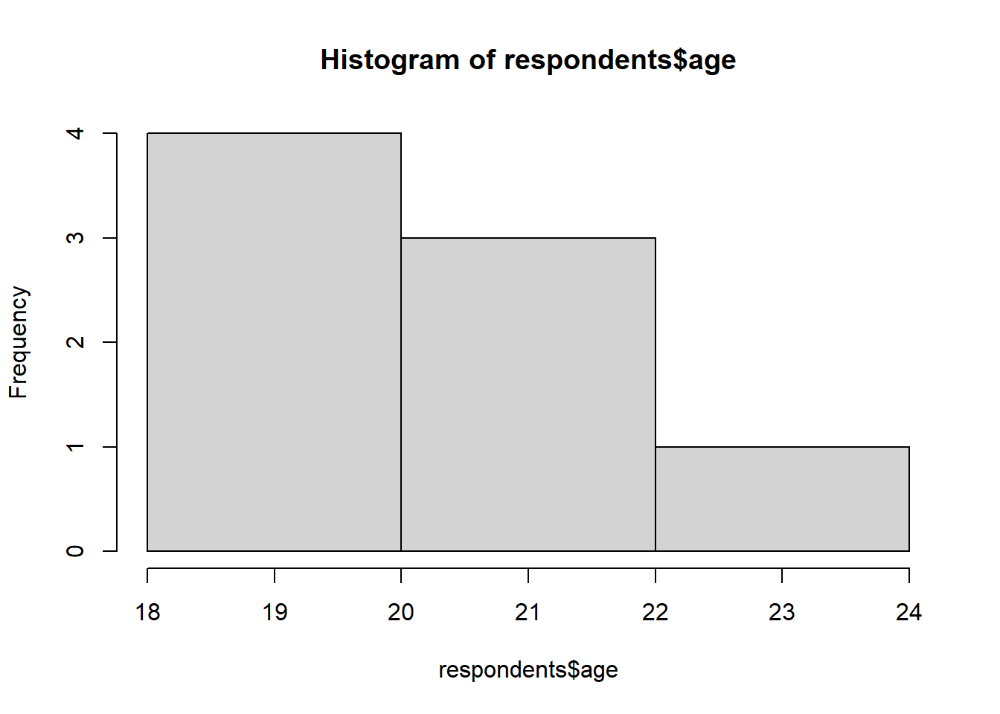
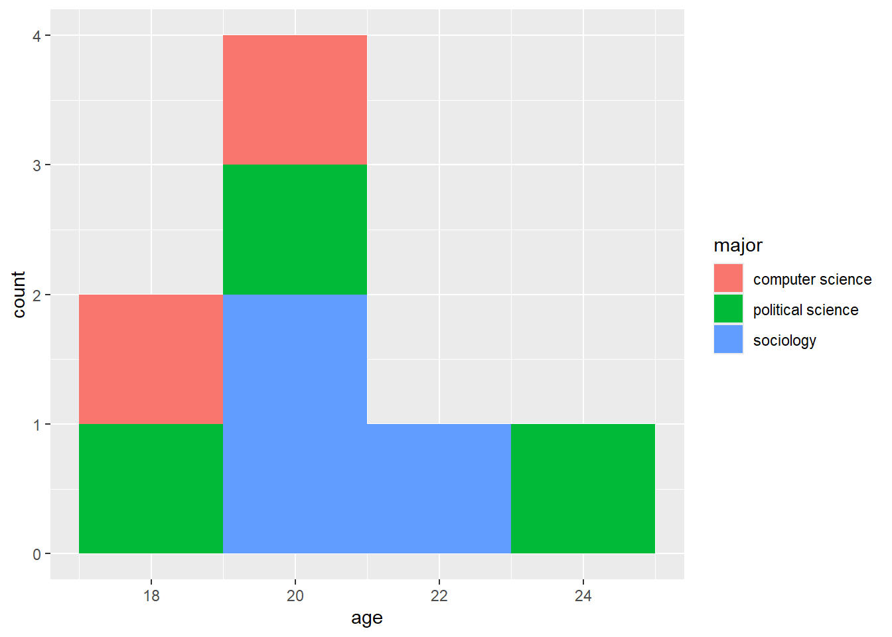

number <- 1
number[1] 1Understanding social science research. Combination of Statistics and Programming allows you to read, understand, and reproduce other scholars’ works.
Automation of manual labor. Programming saves time in many tasks. Calculations, data gathering, and many other tasks could be automated with basic knowledge of programming.
Producing your own research. Programming empowers researchers to design and execute their own custom analyses, simulations, and data visualizations.
Excel
Stata/SPSS/etc.
Python
R is the second most-used statistical software in academia.1 New social science methods and thus packages are usually either developed in R or adapted to R (e.g., quanteda for NLP, CEM for causal inference, etc.). However, R allows you to do much more. For example, this website was made with R and RStudio.
First, we need to install R. Click the button below and click “Download and Install R”. Choose your OS. For Windows you need to download “base”; for MacOS and Linux you have to choose the version of your OS. Install.

For windows:

Second, we need to install RStudio. Click the button below and click “Download RStudio Desktop”. You will be redirected to your version automatically. Install.

It will take some time to understand how everything works in RStudio, but once you understand it, it’s quite straightforward. The most classic UI consists of four panes.
Source. Here we write code to run.
Environment. This pane allows you to interact with the data loaded into RStudio.
Console. This pane provides an area to interactively execute code.
Files. By default, this pane has your working directory. From here you can access files associated with the project.

In RStudio, you can use Markdown language to format text.
For example, this is bold text and this is italic text. And, of course, you can insert images. It’s pretty easy, and after the class you can take a look at some tutorials.

You can do many-many more different things. In this regard, visual editor in RStudio might be helpful. Markdown is also used in several note taking apps, e.g. Obsidian or Notion. Feel free to utilize your Markdown knowledge for your graduate studies.
Generally, what we’ve done so far can be described by the image below. We have downloaded R (“engine”) and RStudio (“car”). In Rstudio we have Quarto, which is this document you are working with now. We can do a lot of things right away – e.g., render our output to a Word document, PDF or HTML.

Now, let’s turn to statistics and programming. This gray part of the document is called chunk or code block. Here we can code. Let’s create an object called number and assign it the value 1.
number <- 1
number[1] 1First shortcut. On windows you can use Alt and -, on Mac you can use Option and - to insert assignment operator. Try it out! Alternatively, you can always type <- or = yourself.
word ... c("Northwestern")
wordAs you noticed, created objects can contain different information, be it numbers or words. As R is the object-oriented language, we can perform different manipulations with our objects.
number + 2
number - 2
number * 2
number / 2[1] 3
[1] -1
[1] 2
[1] 0.5nchar(word)But the real power of programming starts with vectors. Vectors are collections of objects. To create one, you will need to use function c(). Here’s an example,
numbers <- c(1, 2, 3)
numbers[1] 1 2 3Second shortcut. To insert a chunk on Windows you can use Ctrl+Alt+I, on Mac Cmd+Option+I. Try it out and instead of ... insert the following code in this chunk: words <- c("Welcome", "to" ,"Northwestern")
...
Let us start with numbers. R allows you to automate calculation of statistics, perform different manipulations on a set of values.
numbers + 5[1] 6 7 8You can check if some object in a vector is equal to some specified value using == operator. For example:
numbers == 2[1] FALSE TRUE FALSEWhy are we using a double equal sign?
Furthermore, we can easily check what values are greater or less than some number.
numbers > 2[1] FALSE FALSE TRUEnumbers < 2[1] TRUE FALSE FALSEThe table below summarizes most important logical operators in R. They are quite straightforward, but it might take some time to memorize them.
| Operation | Symbol | Example Usage |
|---|---|---|
| Equal to | == |
x == y |
| Not equal to | != |
x != y |
| Greater than | > |
x > y |
| Less than | < |
x < y |
| Greater than or equal to | >= |
x >= y |
| Less than or equal to | <= |
x <= y |
| Logical AND | & |
(x > y) & (a < b) |
| Logical OR | | |
(x > y) | (a < b) |
| Logical NOT | ! |
!(x > y) |
Let’s say we asked a group of people their ages in an Evanston coffee shop. We obtained the following data and assigned it to an object called age.
age <- c(18, 20, 21, 19, 24, 21, 20, 22)You can access the data using indexation. Let’s say you entered the data into your object age as you were receiving the results. You can access the age of your second respondent by indicating [i] to an object.
age[2][1] 20Who is allowed to order espresso martini (yes, in the US drinking age is 21!)?
age ... 21Who is not 20 years old?
...Who is between 20 and 22?
(age >= 20) & (age ... 22)Is the 4th respondent older than the 2nd?
age[...] ... Third shortcut. To run only selected line of code or a code highlight you can use Ctrl + Enter on Windows and Cmd + Return on Mac. Try accessing age of 4th and 2nd respondents separately.
Now we are turning to slightly more advanced topics. Most commonly people describe the whole data they have (sometimes it’s hundreds and thousands of observations) with only a couple of numbers.
For example, we can calculate the average age in our surveyed group.
mean(age)[1] 20.625Alternatively, we can describe our data with minimum and maximum values.
min(age)
max(age)[1] 18
[1] 24Usually such description of data is called descriptive statistics. There is a helpful command summary() that allows us to describe data in one line. Try it out! What is the median you got?
summary(...)You can use the table below for your reference
| Statistic | Function | Example Usage |
|---|---|---|
| Minimum | min() |
min(x) |
| Maximum | max() |
max(x) |
| Mean | mean() |
mean(x) |
| Median | median() |
median(x) |
| Standard Deviation | sd() |
sd(x) |
| Variance | var() |
var(x) |
| Sum | sum() |
sum(x) |
| Summary | summary() |
summary(x) |
We also asked people in the coffee shop about their majors and received the following data:
major <- c("computer science", "sociology", "sociology", "political science", "political science", "political science", "computer science", "sociology")Try to get the descriptive statistics for this data.
...For text data you might want to calculate the number of people in each major.
table(major)major
computer science political science sociology
2 3 3 Insert a chunk and access major of the 3rd respondent.
...
A dataframe is one of the most commonly used data structures in data analysis. It is a simple table, similar to those you have probably seen in Excel. Let’s create one. We have two vectors, age and major. We can combine them into one table.
respondents <- data.frame(age, major)
respondents age major
1 18 computer science
2 20 sociology
3 21 sociology
4 19 political science
5 24 political science
6 21 political science
7 20 computer science
8 22 sociologyColumns are vectors. In a table format they are referred to as variables (and thus these labels are used interchangeably). Rows are called observations. There are some useful commands that provide information about your dataframe.
names(respondents)[1] "age" "major"nrow(respondents)[1] 8ncol(respondents)[1] 2dim(respondents)[1] 8 2To access a variable as vector you can use $ sign.
respondents$age[1] 18 20 21 19 24 21 20 22This would allow you to manipulate this variable. And as a spoiler of the future sections, let’s visualize this data!
hist(respondents$age)
You can easily combine previously used functions. For example, indexation provides access to any observation.
respondents$major[8][1] "sociology"Or you can get the maximum age in our dataset.
max(respondents$age)[1] 24Moreover, $ operator can create a new variable in your dataframe. Let’s calculate the number of characters in majors using the nchar() function
respondents$nchar_major <- ...(respondents$...)
respondentsHere is a dataset that consist of information about selected cars. Provide your answers to the questions using code
cars_information <- mtcarsWhat information is included in the dataset (list names of the variables)?
To understand what these variables stand for you can check details about included datasets or any other functions using ?
?mtcarsHow many cars are listed in the dataframe (how many rows are there)?
Describe mpg variable. Include average, minimum and maximum.
What is the minimum horsepower (hp)?
Are there any cars that have horse power greater than 200 but less than 250?
Create a new variable called power_to_weight, which calculates the ratio of horsepower (hp) to weight (wt). You need to divide horsepower by weight
What is an average Power to Weight Ratio?
What is a minimum Power to Weight Ratio?
Create a histogram of power_to_weight variable
As you have noticed, we deal with different classes of data. Sometimes these are words (e.g., names of cars or majors) and numbers (e.g., age or horsepower). The analysis we perform is highly dependent on data classes. But before discussing it in a detail, we need to install one library that would help us to grasp this difference. All functions we have worked before are base to R. However, to access some other useful functions we might need to download add-ons/libraries/packages (used interchangeably). Run the code below to install DiagrammeR library. You need to do it only once.
install.packages("DiagrammeR")These are the basic classes of data in R. Some examples might include:
Nominal: Names, Labels, Brands, Country names, etc.
Ordinal: Educational Levels (High School-BA-MA-PhD), Customer Rating (Unsatisfied-Neutral-Satisfied), etc.
Discrete: Number of customers per day, number of seats won by political parties, etc.
Continuous: Height of people, voter turnout, etc.
For each object, vector, or variable, you can check its class
class(cars_information$mpg)
class(respondents$major)[1] "numeric"
[1] "character"Alternatively, you can check if this variable is of specific class
is.integer(cars_information$mpg)
is.character(cars_information)[1] FALSE
[1] FALSETake a look on the cyl variable in cars dataset. What is its class?
...
class(...)Do you think R classified it properly? If a variable is identified incorrectly, you can change it.
For example, you can change it to a factor.
cars_information$cyl <- as.factor(cars_information$cyl)Data classes become increasingly relevant as you work with public datasets. I suggest you inspect if the variables were treated correctly by R.
Here are the most common file types to save/load your datasets:
csv is widely universally in data analysis. A default option for R users
xslx is Excel’s file type. You can easily use it in R too
dta is Stata file, you can use it in R too
rds is R file. Most comfortable to work with in R.
Let’s try the most used one, namely csv. Download Corruption Perception Index dataset from transparency international using this URL.
You need to put this dataset to your current working directory, which is
getwd()Then, load the dataset. CPI = 0 is a highly corrupt country, whereas CPI = 100 is very clean.
cpi <- read.csv("cpi.csv")What are the variables in the dataset?
How many observations are there?
Check the classes of the variables. Are they correct?
Provide the descriptive statistics of cpi_2023 variable
Create a new variable that provides the difference between CPI of a country in 2023 and 2022. On average, are countries getting cleaner in terms of corruption?
Draw a histogram of this newly created variable
Calculate average and median. Are they different - if yes, why?
You’ll need to install tidyverse library. It allows you to do so many more! Insert the name of the library and install it.
install.packages(...)Small spoiler alert what you can do with it! Do you remember the histogram we created earlier? Check it out. This is a pretty powerful tool to understand what’s going on in your data. See you tomorrow!
library(tidyverse)
ggplot(data = respondents) +
geom_histogram(aes(x = age, fill = major), binwidth = 2)
I know what panes in RStudio used for
I know what objects, vectors and dataframes are, and I know how to create them
I know what variables and observations are
I know what descriptive statistics is and I can easily calculate average, median, etc.
I know how to create a variable and how to change its class
I know how to load data to R and how to install new libraries
Higher School of Economics, Data Science Minor, https://electives.hse.ru/minor_data_spb/
Posit, RStudio User Guides, https://docs.posit.co/ide/user/ide/guide/ui/ui-panes.html
Transparency International, Corruption Perception Index, https://www.transparency.org/en/cpi/
UT Austin, Department of Government, Methods Camp, https://methodscamp.github.io/
Harvard University Department of Government, Math Prefresher, https://iqss.github.io/prefresher/